Welcome
Thank you for purchasing Minfolio. Before you get started, please go through the documentation. We have outlined almost all required information you need to know to use this Theme. If you have any questions that aren't covered in this documentation, please feel free to contact us.
What's included
minfolio.zip - contains the installable WordPress theme.
minfolio-child.zip - contains the child theme file used only for code changes.
Documentation - contains the theme documentation.
Licensing - License related information.
Required plugins
Minfolio Core - The core plugin for the theme.
Elementor - Drag & Drop page builder.
One Click Demo Import - To import the demo data.
Contact Form 7 - Used to created contact form in the theme.
Safe SVG - For uploading SVG'S.
Theme Requirements
You must be running WordPress 5.0 or higher, PHP 7.4 or higher, and MySQL 8 or higher.
Recommended PHP Configuration Limits
max_execution_time 180
memory_limit 128M
post_max_size 32M
upload_max_filesize 32M
Theme Installation
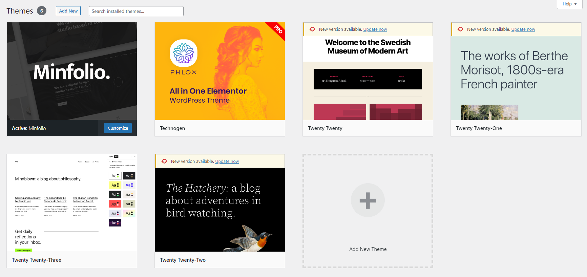
Theme installation via WordPress
- Log into your WordPress Dashboard and browse to
Appearance > Themes.
- Click
Add new button, located at the top of the screen or Add new theme.
- Click on
Upload Theme button at the top of the screen and click on Choose File, locate minfolio.zip.
- Click on
Install Now button.
- Click on
Activatelink.
- After the theme is activated, the notice will appear “This Theme requires the following plugins...”, click
Begin installing plugins.
Theme installation via FTP
- Log into your site via FTP and browse to your folder located at
wp-content/themes.
- Unzip the
minfolio.zip file you downloaded and upload to the server in folder located at wp-content/themes.
- Next log into your WordPress site and navigate to
Appearance > Themes.
- Click on
Activatelink.
- After the theme is activated, the notice will appear “This Theme requires the following plugins...”, click
Begin installing plugins.
Theme installation errors
Are you sure you want to do this?
Above error typically happens in the senarios given below.
- You are trying to upload the Full zip file and not just the minfolio.zip.
- Your server memory limit to PHP is too low.
- Your upload limit isn’t large enough and you must update your PHP.INI file to increase the upload_max_filesize value or contact your webhost to fix it.
The package could not be installed. The theme is missing the style.css stylesheet.
Above happens when you try to upload the Full zip that includes documentation, demo content... etc. Please make sure you are uploading only minfolio.zip.
Demo Import
- Open WordPress Dashboard.
- Go to
Appearance > Import Demo Data.
- Click on
Import Demo Dataand wait until you see the message "That's it, all done!".
Note : Dont's close or navigation away from the browser while the import is in process.
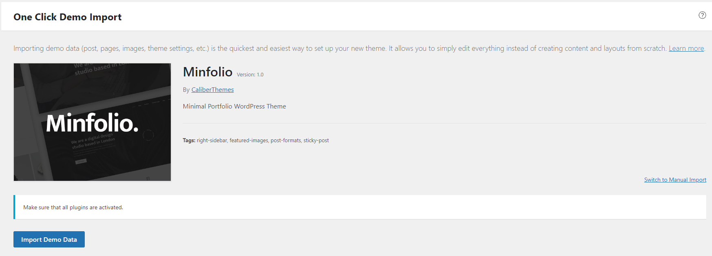
Theme Updates
Updating the theme via WordPress is very similar to the installation process via WordPress.
Theme installation via WordPress
- Go to WordPress Dashboard.
- Go to
Appearance > Themes.
- Deactivate Minfolio Theme by simply activating a different theme.
- Once you activate a different theme, you can delete the Minfolio Theme(This won’t delete your content).
- Now install the latest downloaded version of the theme(See Theme Installation via WordPress).
Theme installation via FTP
- Log into your site via FTP and browse to your folder located at
wp-content/themes.
- Delete minfolio folder (This won’t delete your content).
- Download the latest version and unzip the
minfolio.zip file and upload to the server in folder located at wp-content/themes (You can simply drag and drop the folder).
- Next log into your WordPress site and navigate to
Appearance > Themes to activate Minfolio.
Note : Remember to clear your browser cache after each update.
Customize
Minfolio comes with advaced options where you can customize theme styles.
- General - Lazy Load, Javascript Minification etc
- Branding - Site Logo
- Menu - Menu Style, Menu Layout,Typography, Colors etc
- Blog - Labels, Social Share, Typography, Colors etc
- Portfolio - Settings, Labels, Social Share, Typography, Colors etc
- Page 404 - Title, Description
- Footer - Layout, Typography, Colors etc
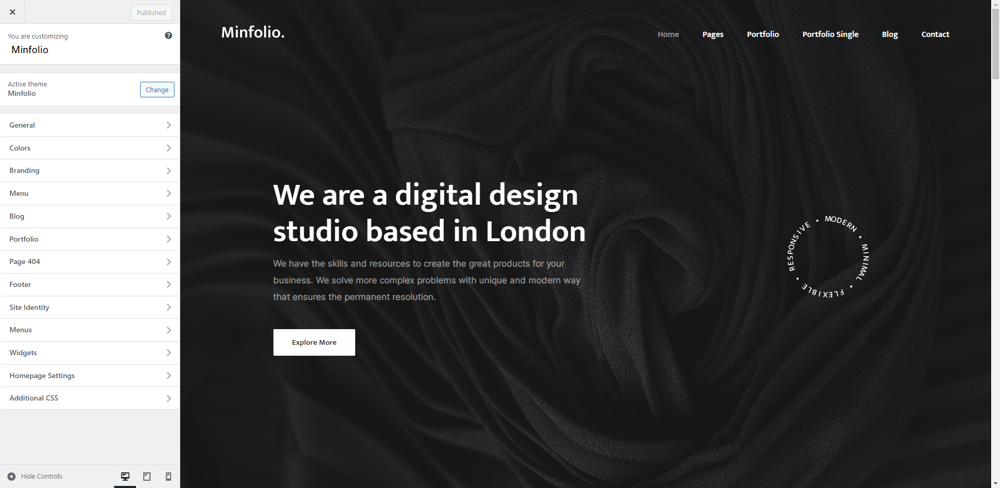
Page & Page Builder
Create a new page
- Navigate to Pages in your admin sidebar and click
Add New option.
- Enter a new name for your page and add the content. Publish the page.
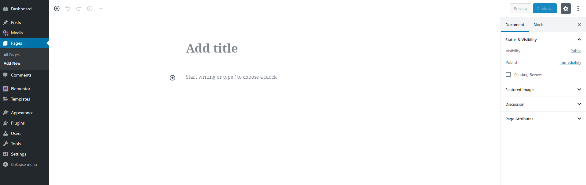
Elementor Page Builder has been used to build pages in the theme. Click on the link for the documentation documentation.
Elementor settings can customized in 'Dashboard > Elementor > Settings'.
Enable 'Elementor Page Builder' to use in portfolio post by checking the 'Portfolio Items'.
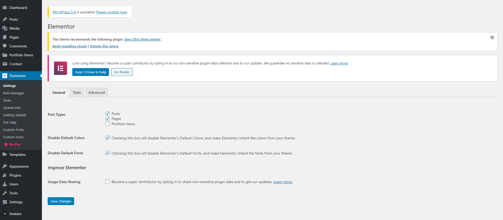
Use Elementor to Build Page
- Choose
Edit with Elementor to edit your page
- Choose elements you want to add to your new page in the element box and start editing them.
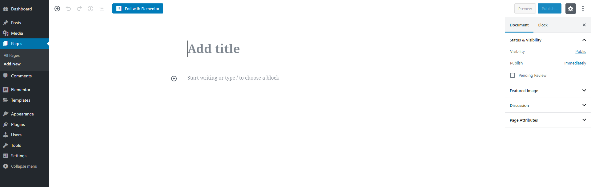
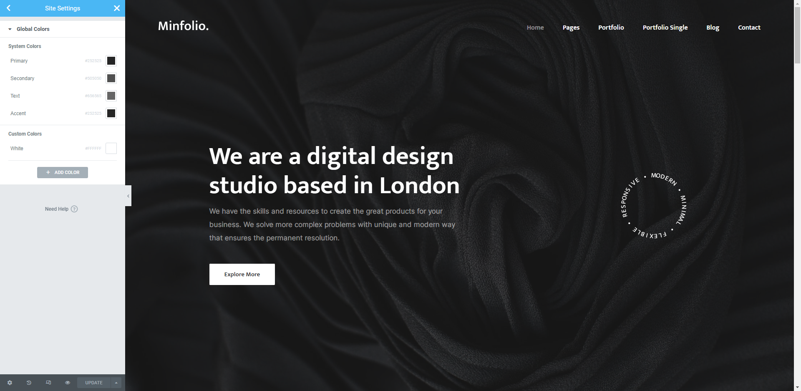
Homepage / Postpage Setup
- Go to
Settings > Reading in your WordPress Dashboard.
- Set "Home/Index page displays" to a "Static Page".
- In the Homepage drop down menu choose your home page. (Note – Pages will only be available in the dropdown if they have been created).
- In the Blog page drop down menu choose your blog page.
- Click on
Save changes button
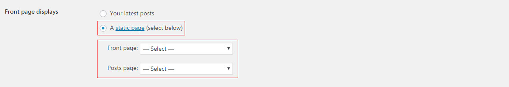
Menu
Menu setup
- In WordPress Dashboard go to
Appearance > Menus.
- Click on
create a new menulink.
- Enter menu name in Menu Name text field.
- Click the
Create Menu button.
- Under Menu Settings check the box Main Menu against Display Location.
- Click on
Custom Links and add appropriate URL and Link Text
- Click on
Add to Menu button.
- Once the menu links are added, it will appear on the right side under Menu Structure and can be customized, reordered.
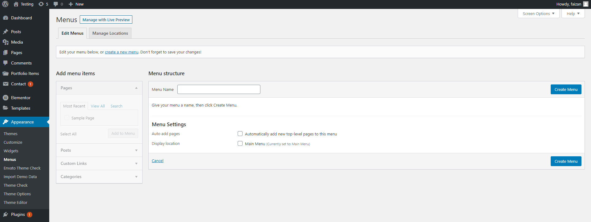
Menu Customisation
- In WordPress Dashboard go to
Appearance > Customize > menu.
- Under 'Menu settings' you can make required customisations.
- Click on
Save button.
Portfolio Posts
Note:-Enable 'Elementor Page Builder' to use in portfolio post. 'Dashboard > Elementor > Settings > General > Post Types > Portfolio Items'
Create a portfolio post for page project.
- In your WordPress Dashboard, go to
Portfolio Items > Add New Item.
- Enter Portfolio Item Title.
- Under Portfolio Thumbnail in
Title, enter appropriate title.
- Under Portfolio Thumbnail in
Subtitle, enter appropriate subtitle.
- Under Portfolio Settings in
Project type choose preferred Project.
- In
"External Project" you can add preferred external URL.
- You can specify where to open the link.
- Enter appropriate title & value for metas.
- Under Portfolio Metas in
Social media share, check to enable social media share in portfolio page.
- Now click on
Publishbutton
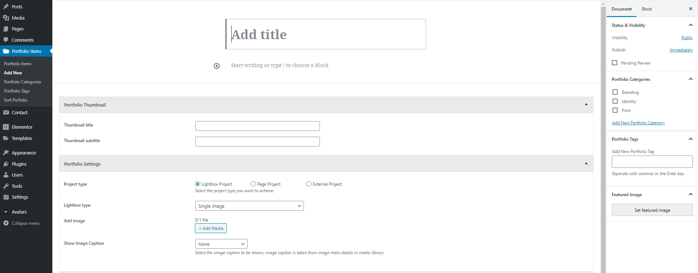
Adding portfolio section in a page
- Go to page where you want to add portfolio section and
Edit with Elementor
- Drag
Portfolio Sectionfrom Elementor left panel and drop on the page
Create a portfolio category
- In your WordPress Dashboard, go to
Portfolio Items > Portfolio Categories.
- Enter the category name in the textfield below name (This name will be displayed in portfolio filter on the site).
- Click on
Add New Portfolio Category button.
- You can also create a new category from the portfolio page itself by clicking on
Add New Portfolio Category link.
Sort a portfolio post
- In your WordPress Dashboard, go to
Portfolio Items > Sort Portfolio.
- Rearrange the order to sort the portfolio post simply by drag & drop.
Blog Posts
Create a blog post
- In your WordPress Dashboard, go to
Posts > Add New.
- Enter Post title and Post content.
- Enter Excerpt if required.
- Choose appropriate post format on the right side under Format pane. Select image for image post, Video for video post etc. Based on your selection you will see additional fields, gallery will display drop zone to drop multiple images, video will display text field for the URL.
- Choose appropriate Category and Tags. New Categories can be added by clicking
Add New Category link.
- Click
Set featured image link for post image.
- Click
Publish button.
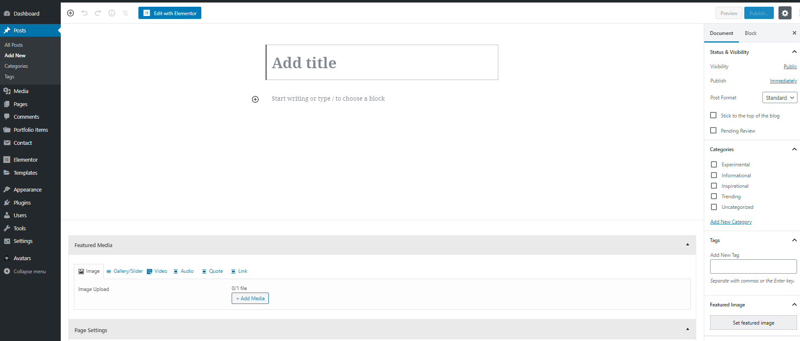
Create blog post category
- In your WordPress Dashboard, go to
Posts > Categories.
- Enter the category name in the textfield below name.
- Click on
Add New Category.
- You can also create a new category from the blog page itself by clicking on
Add New Category button.
Contact Form
we have created contact forms using contact form 7 plugin in this Theme. Below are the steps to create contact form.
Create new contact form
- In your WordPress Dashboard, go to
Contact > Add New.
- Enter the form name.
- Click on
Mail tab and enter the required information.
- Click on
Save button.
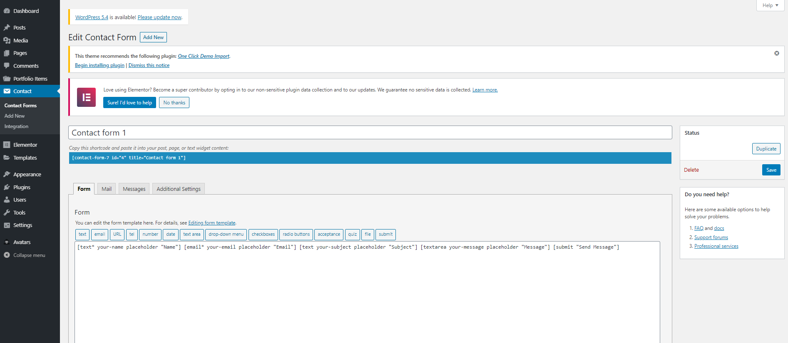
Adding contact form in a page
- Go to page where you want to add contact form and
Edit with Elementor
- Drag
Contact Form 7from Elementor left panel and drop on the page
- Select the Contact form on the left panel and update the changes.
Selecting theme contact form
After the demo import is done, edit the contact page using the elementor. Select 'Agency Contact Form' from the dropdown and update the changes.
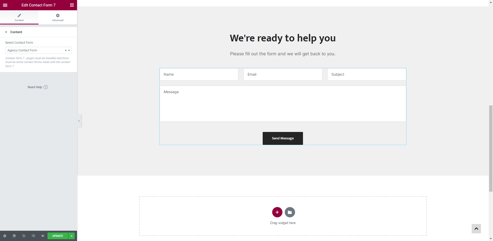
Footer
Footer Settings
- In WordPress Dashboard go to
Appearance > Customize > Footer.
- Background color can be set.
- Icon color can be set.
- Textarea for copyright text.
- Enable/Disable social link in footer.
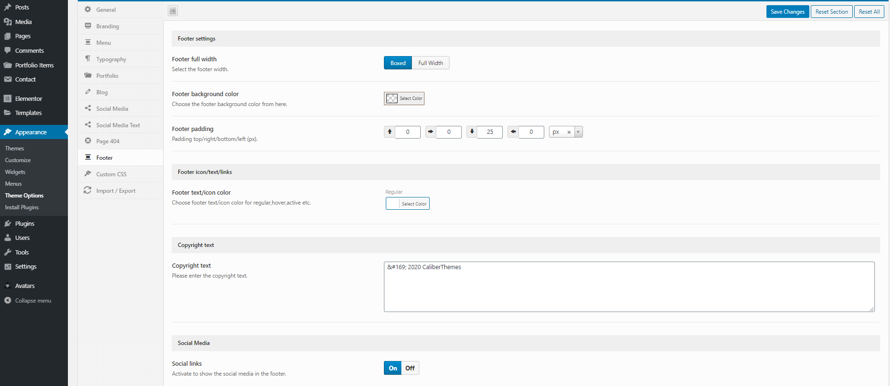
Plugin Installation
After activating the theme, you will see the notice, “This Theme recommends the following plugins...”,Click Begin installing plugins.
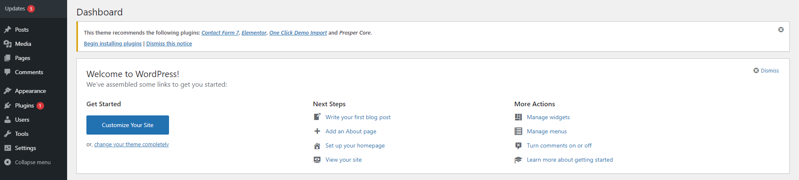
Required plugins for the theme.
Minfolio Core - The core plugin for the theme.
Elementor - Drag & Drop page builder.
One Click Demo Import - To import the demo data.
Contact Form 7 - Used to created contact form in the theme.
Safe SVG
3rd Party Plugin Installation
- Open WordPress Dashboard.
- Go to
Plugins > Add New
- Now you can either upload a plugin by clicking on
Upload Pluginor can search them in Search plugins..field
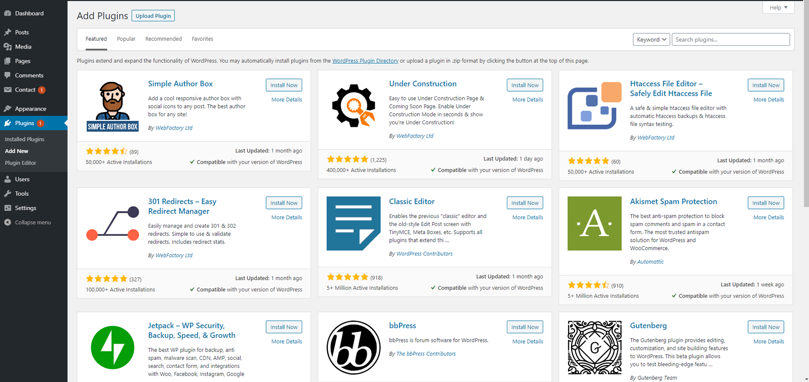
Shortcodes
We have created some custom shortcodes for the theme.
- Edit the page using the page builder
- Navigate to
Minfolio Elements on the left panel.
- Drag & Drop the shortcode you want to use.
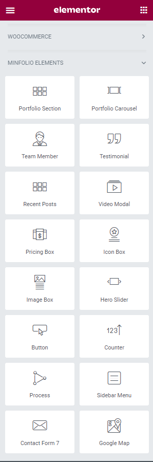
Color Customization
We have created a color palette using the Elementor's Global Colors.
- Edit the page using the page builder
- Click on Hamburger menu at the top left panel.
- Click on 'Site Settings' and then 'Global Colors'.
- Choose the colors and update the changes.
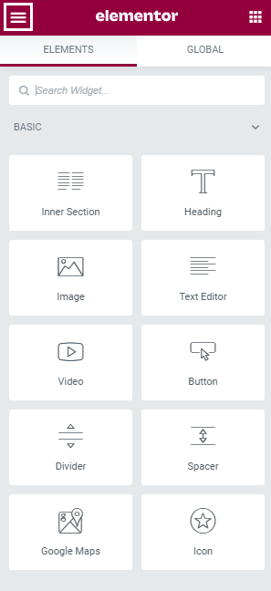